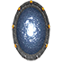
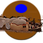
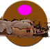
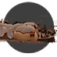
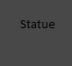
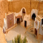

| Batiment | Image | Type | Coût de construction | Fonction | Recompense Ouvrier | Recompense Propriétaire |
|---|
| Porte |  | Spécial | / | Permet de déplacer l'ouvrier qui se trouve sur la porte dans un emplacement libre, gratuitement | / | / |
| Comptoir | | Spécial | / | Donne 3 deniers au propriétaire de l'ouvrier placé dessus | 3 deniers | / |
| Déplacement prévôt |  | Spécial | / | Permet au propriétaire de l'ouvrier poser dessus de déplacer le prévot de 1 à 3 cases en avant ou arrière gratuitement | / | / |
| Champ de joute | | Spécial | / | Le propriétaire de l'ouvrier devra payer 4 denier pour recevoir 1 lingot d'or | 4 deniers contre 1 or | / |
| Écurie | | Spécial | / | Permet de changer l'ordre de passage | / | / |
| Auberge | | Spécial | / | L'auberge possède 2 cases, lors du placement de l'ouvrier celui qui se trouve sur la case de gauche lors de l'activation passe sur la case de droite. L'ouvrier sur la case de droite permet a son propriétaire de ne payer qu'un denier pour chaque ouvrier quelque soit le nombre de passage | / | / |
| Carrière | | Neutre | / | Permet de recuperer une unité de pierre | 1 pierre | / |
| Carrière | | Bois | 1 bois + 1 nourriture | Permet de recuperer deux unitées de pierres | 2 pierres | 2 prestiges a la construction |
| Marché | | Neutre | / | Permet d'échanger une ressource au choix contre des denier | 1 denier | / |
| Marché | | Bois | 1 bois + une ressource au choix | Permet d'échanger une ressource au choix contre des denier | 2 deniers | 4 prestige a la construction |
| Forêt | | Neutre | / | Permet de recuperer 1 bois ou une nourriture | 1 bois ou 1 nourriture | |
| Ferme | | Neutre | / | Permet de recuperer 1 tissus ou une nouritture | 1 tissus ou 1 nourriture | |
| Ferme Tissu |  | Bois | 1 bois + 1 nourriture | Permet de recuperer 2 tissus ou une nourriture | 2 tissus ou 1 nourriture | 2 prestiges a la construction |
| Ferme Nourriture |  | Bois | 1 bois + 1 nourriture | Permet de recuperer 2 tissus ou une nourriture | 2 tissus ou 1 nourriture | 2 prestiges a la construction |
| Ferme |  | Pierre | 1 bois + 1 nourriture | Permet de recuperer 2 nourittures et un tissus | 2 nourittures et 1 tissus | 3 prestiges a la construction + le choix entre 1 tissus ou 1 nouritture a l'activation |
| Scierie | | Neutre | / | Permet de recuperer une unite de bois | 1 bois | / |
| Scierie | | Bois | 1 bois + 1 nourriture | Permet de recuperer deux unite de bois | 2 bois | 2 prestiges |
| Charpentier | | Neutre | / | Permet de construire un nouveau batiment | / | / |
| Notaire | | Bois | 1 bois + 1 tissu | Permet de construire une residence si un ouvrier est sur le notaire | 1 tissu | une residence et 4 prestige a la construction |
| Macon | | Bois | 1 bois + 1 nourriture | Permet de construire un batiment en pierre | / | un batiment en pierre et 4 prestige a la construction |
| Colporteur | | Bois | 1 bois + 1 ressource au choix | ? | ? | ? |
| Eglise | | Pierre | 1 pierre + 1 tissus | Permet d'echanger des denier contre du prestige | 4 denier contre 5 prestige | Le proprietaire recoit forcement 1 prestige, il peut également payer 5 deniers pour recevoir de l'or. Le propriétaire recoit 3 prestige a la construction |
| Parc | | Pierre | 1 pierre + 1 nouritture | Permet de recevoir du bois et de la nouritture | 2 bois et 1 nouritture | Le proprietaire recoit 1 nourriture ou 1 bois au choix et 3 prestiges a la construction |
| Banque | | Pierre | 1 pierre + 1 bois | Permet d'echanger des deniers contre de l'or | 2 denier contre 1 or | 6 prestige a la construction + la possibilite d'echanger 5 deniers contre 2 or a l'activation |
| Alchimiste | | Pierre | 1 pierre + 1 nourriture | Permet d'echanger des ressources contre de l'or | 2 ressource au choix contre 1 or | Le propriétaire reçoit 6 deniers a la construction et 1 supplementaire a chaque activation, il choisit également 4 ressources au choix |
| Tailleur | | Pierre | 1 bois + 1 pierre | Permet d'echanger du tissus contre du prestige | 2 tissus contre 4 presitge | Le propriétaire reçoit 6 prestige a la construction + 1 prestige a chaque activation et il peut donner 3 tissu contre 6 prestige |
| Atelier | | Pierre | 1 pierre + 1 nourriture | Permet de recevoir du tissus et de la nourriture | 2 nourriture + 1 tissus | Le propriétaire reçoit 3 prestige a la construction, il peut également choisir entre 1 tissus et 1 pierre a l'activation |
| Architecte | | Pierre | 1 pierre + 1 nourriture | Permet de construire un batiment de type prestige | 1 batiment de prestige | 6 prestige |
| Residence |  | Residence | / | Permet de recevoir un denier si un ouvrier est dessus | 1 denier | 2 prestiges |
| Cathedrale | | Prestige | 3 or + 4 pierre + 1 bois | Permet au propriétaire de gagner 25 prestiges | / | 25 prestiges |
| Monument | | Prestige | 2 or + 4 pierre | Permet au propriétaire de gagner 14 prestiges | / | 14 prestiges |
| Bibliotheque |  | Prestige | 1 or + 3 bois | Permet au propriétaire de gagner 10 prestiges ou 1 denier pour l'ouvrier | 1 denier | 10 prestiges |
| Grenier | | Prestige | 1 or + 3 nourriture | Permet au propriétaire de gagner 10 prestiges | / | 10 prestiges |
| Tisserand |  | Prestige | 1 or + 3 tissus | Permet au propriétaire de gagner 12 prestiges | / | 12 prestiges |
| Statue |  | Prestige | 1 or + 2 pierre | Permet au propriétaire de gagner 7 prestiges | / | 7 prestiges |
| Theatre | | Prestige | 2 or + 3 bois | Permet au propriétaire de gagner 14 prestiges | / | 14 prestiges |
| Universite | | Prestige | 2 or + 3 pierre | Permet au propriétaire de gagner 14 prestiges | / | 14 prestiges |
| Hotel |  | Prestige | 2 or + 3 pierre | Permet au propriétaire de gagner 16 prestiges ou 2 denier pour l'ouvrier | 2 deniers | 16 prestiges |